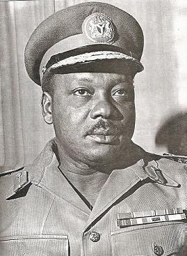
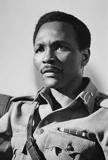
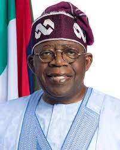

Nigerian History
What is the oldest Nigerian history?
The history of Nigeria can be traced to the earliest inhabitants whose remains date from at least 13,000 BC through early civilizations such as the Nok culture which began around 1500 BC.
What was Nigeria before it was called Nigeria?
In 1893, the Oil Rivers Protectorate was renamed Niger Coast Protectorate with Calabar as capital. In 1890, the British reportea Shaw suggested that the area be named “Nigeria” after the Niger River.
Name of Nigerian President Past and present
- Azikiwe Nnamdi (1 October 1963 to 16 January 1966)
- General Johnson Aguiyi-Ironsi (16 January 1966 to 29 July 1966)

- General Yakubu Gowon (1 August 1966 to 29 July 1975)

- General Murtala Mohammed (29 July 1975 to 13 February 1976)
- General Obasanjo Olusegun (13 February 1976 to 1 October 1979)
- President Shehu Shagari (1 October 1979 to 31 December 1983)
- General Muhammadu Buhari (31 December 1983 to 27 August 1985)
- General-Ibrahim-Babangida (27 August 1985 to 26 August 1993)
- Ernest Shonekan (26 August 1993 to 17 November 1993)
- General Sani Abacha (17 November 1993 to 8 June 1998)
- General Abdulsalami Abubakar (8 June 1998 to 29 May 1999)
- Umaru-Musa-Yar-Adua (29 May 2007 to 5 May 2010)
- Goodluck Ebele Jonathan (29 May 2010 to 29 May 2015)
- President Bola Tinubu(current President)
